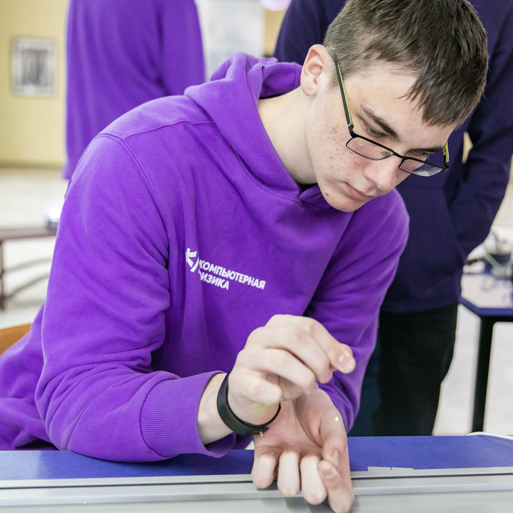
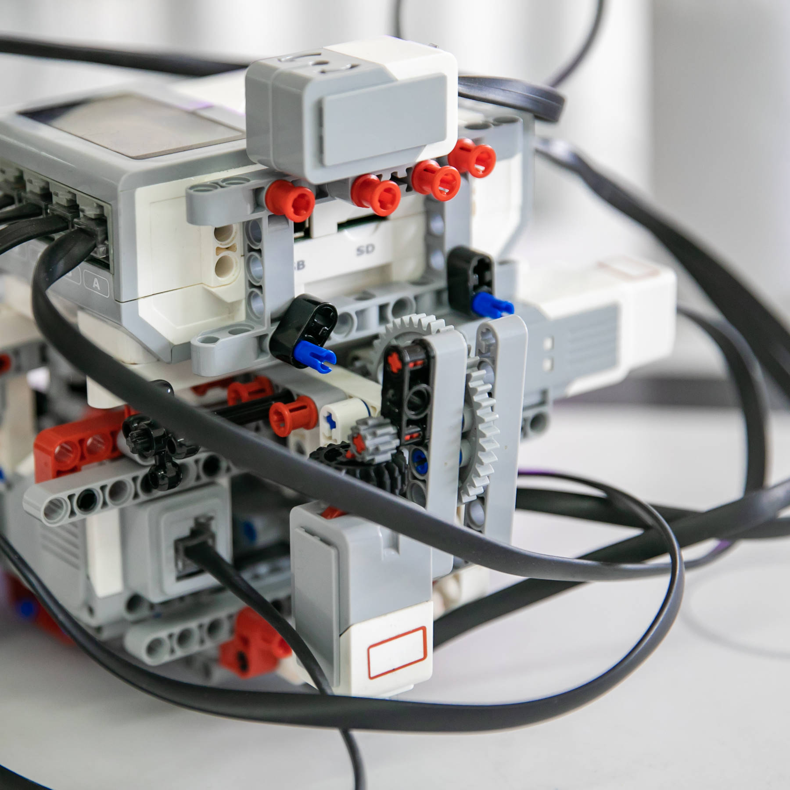

Факультет компьютерных наук и электроники - один из самых престижных и востребованных среди молодежи.
Здесь изучаются современные информационные технологии и электроника,
а выпускники получают отличные перспективы для карьерного роста и профессионального развития.
На факультете проводятся открытые дни для абитуриентов, на которых посетители могут ознакомиться
с образовательной программой, познакомиться с преподавателями и студентами, а также посетить лекции и мастер-классы.


Открытые дни на факультете компьютерных наук и электроники включают стенды по радиационной безопасности,
робототехнике и компьютерной безопасности. На стендах можно получить практические знания и узнать
о последних разработках в этих областях.